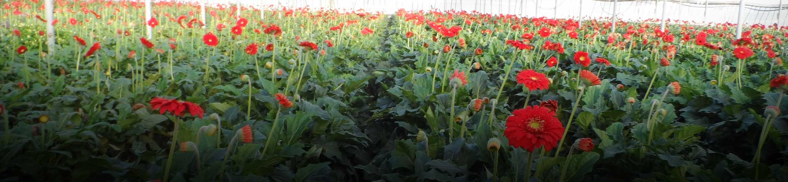
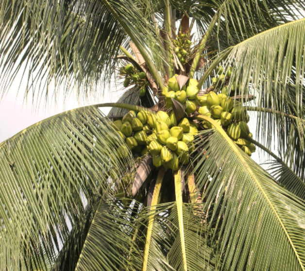
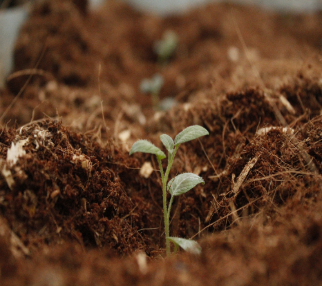
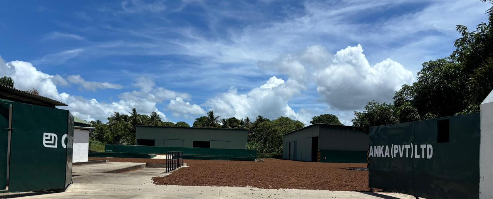
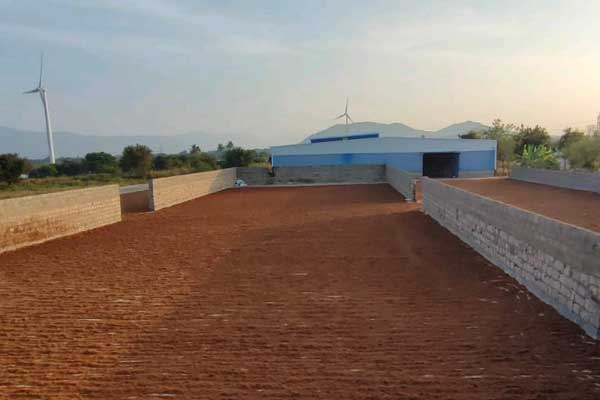
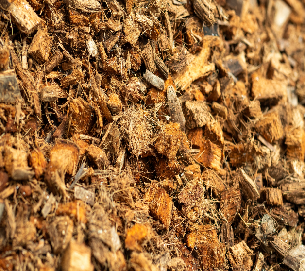

Blog
Articles
Latest articles
-

Why coco is unique?
Coco is renewable which makes its use a totally environmental friendly process. Thanks to nature’s bounty, it stands out as a renewable growing medium.
Read article -

Coco as a Substrate (Growing Medium)
Depending on type of plants to be grown, coco peat or a mixture of coco peat and husk chips could be used as a superior growing media to substitute soil.
Read article -

Growing Sustenance through Innovation and Nature.
At Cocowide, we transform the natural potential of renewable coco peat into world- class growing solutions. As an industry leader and technical expert, we empower the global greenhouse sector by delivering substrates that consistently outperform traditional me
Read article -

Strategic Global Expansion
To meet the rising global demand for specialized products, we have expanded our footprint into India through Cocowide Exports Pvt Ltd.
Read article -

'Coco’ or ‘Coir’
Terms either ‘Coir’ or ‘Coco’ are used commonly to describe coco peat and coco husk chips.
Read article